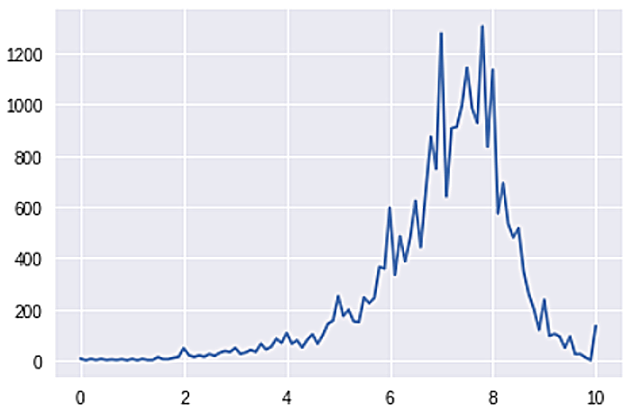
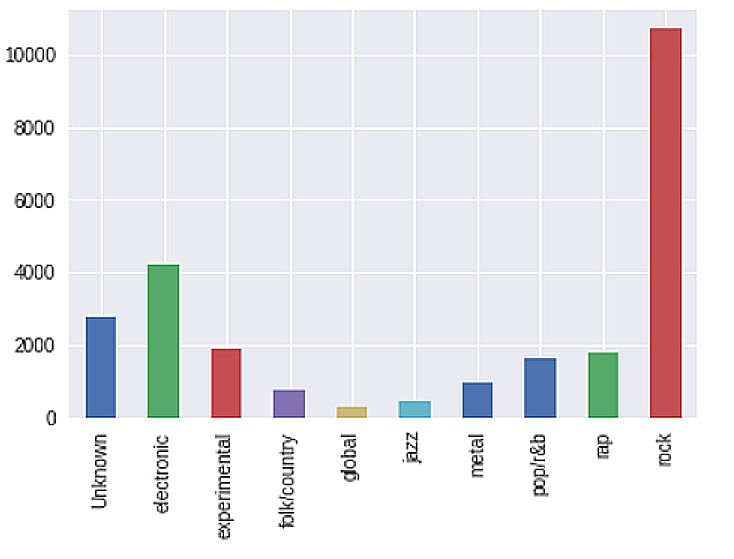
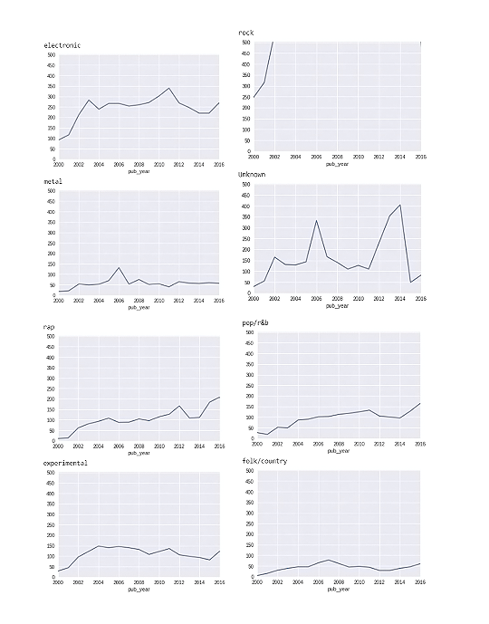
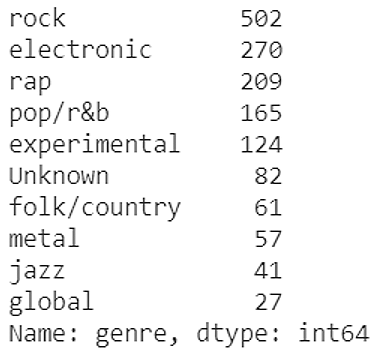
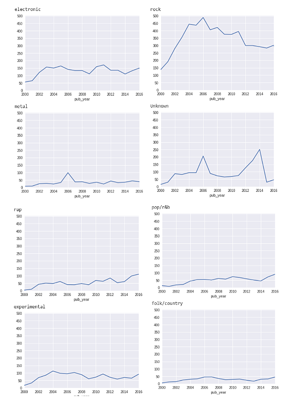
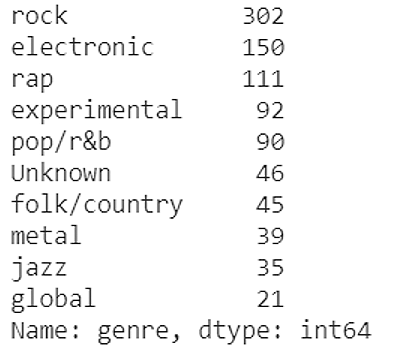
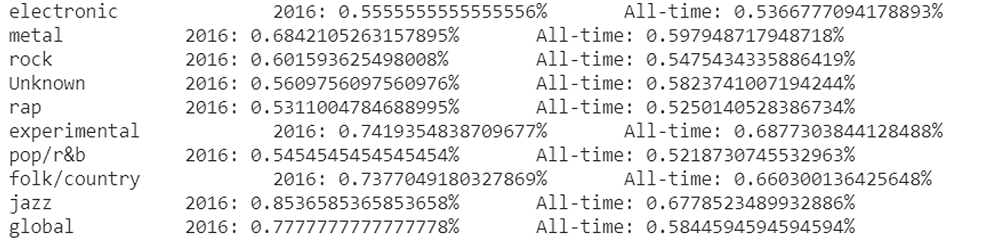

We first combine all the data that we will be needing to answer the research questions. Then, we check the data for null values. We found that there are missing values in the year, label, author type and year. So we eliminated these null values by replacing it with the “unknown” value.
We then checked the distribution of scores and found out that there is an average score of 7.03 scores.
Then we checked the distribution of genres and found out that the majority of the albums that was rated is of the rock genre. There might be a slight indication of a bias here.
The next step that we did was we looked at each genre individually and looked at how many reviews were made per year in each genre, from the year 2000 to 2016.
While most of the genre had at most 200 reviews, rock’s reviews rapidly increases and electronic genre’s reviews are relatively high.
We tried to look at the publishing year of these genres in the year 2016 and found out that rock was the most published genre, followed by the electronic genre.
So instead, we took the count of the scores of the review that are higher than the mean.
Looking again at the number of songs that were published in the year 2016, but this time the ones with the scores greater than the mean of all scores.
Surprise surprise: the top 3 genres did not change.
Then we took the count of the scores of the review that are lower than the mean.
/**insert images*/Since the data are not evenly distributed, we took the percentage of the reviews which had scored higher than the mean per genre.
So we found out that jazz had the highest percentage of scores which are higher than the mean score All-time (2000-2016) and in 2016 alone. It is followed by global music. We can also consider the fact that there was an outburst of a release of rock music so it may mean that the rock genre is a potential one can tap into as it has a growing audience, ergo, market.